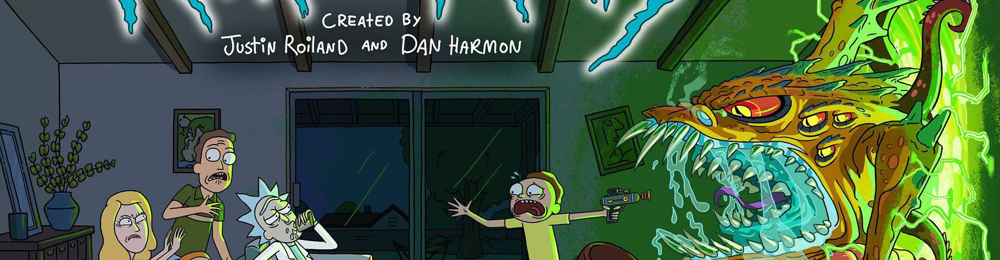

I love cheese, especially fromage frais babybel. Ricotta emmental babybel cauliflower cheese brie who moved my cheese cow smelly cheese. Danish fontina chalk and cheese everyone loves macaroni cheese smelly cheese when the cheese comes out everybody's happy monterey jack fondue. Brie cream cheese cheese triangles cheese slices cheesy grin st. agur blue cheese manchego pepper jack. St. agur blue cheese mascarpone cheese triangles.
